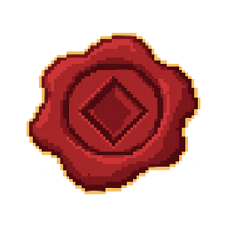
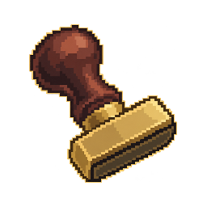
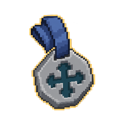
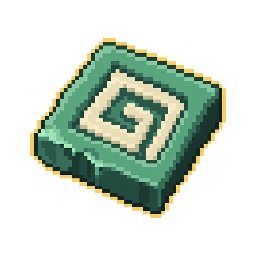
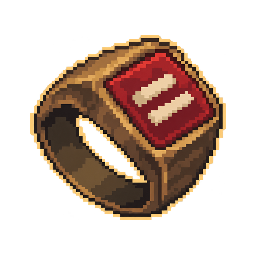

Пять самостоятельных категорий. Эскизы для выбора основы; соответствия конкретным томам пока не назначены.
1. Восковая печать

Круглая / угловатая; целая / треснувшая
64 px32 px
2. Штамп с ручкой

Короткая / длинная ручка; разная подошва
64 px32 px
3. Подвесная печать

Одна / двойная; разные ленты и формы
64 px32 px
4. Каменная печать

Плоская / толстая; целая / со сколом
64 px32 px
5. Перстень-печатка

Узкий / массивный; круглый / квадратный щиток
64 px32 px